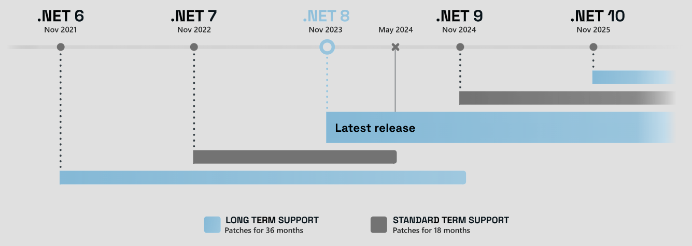
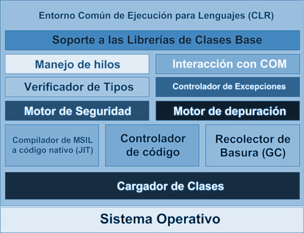
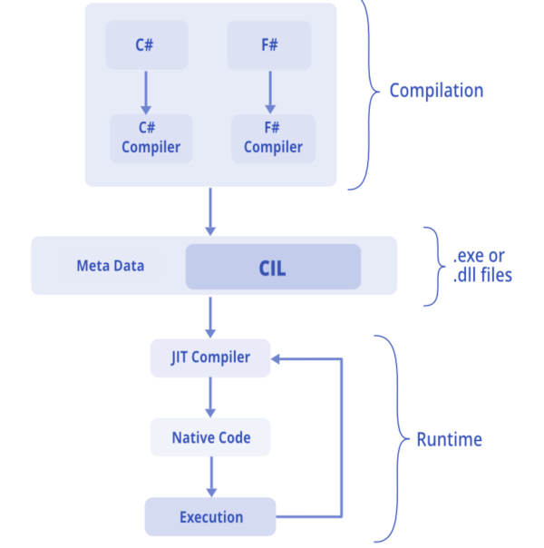
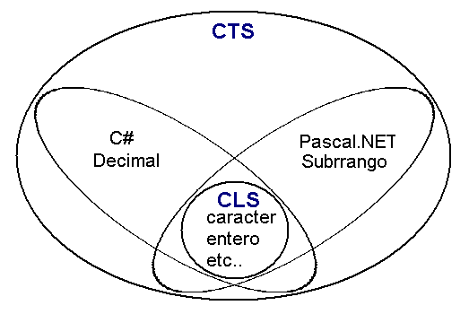

Descargar estos apuntes en pdf o html
- Índice
- Introducción a .NET o dotnet
- Un poco de historia
- Versiones del lenguaje C# (CSharp) según la plataforma
- .NET 6 LTS
-
2002 Aparece .NET Son una serie de tecnologías desarrolladas por Microsoft para interoperabilidad de aplicaciones con la red Internet en respuesta a la aparición de Java™️ de la mano de Sun Microsystems.
En sus inicios, se le denominó .NET Framework hasta la versión 4.8 aún en uso. Sin embargo, este framework solo estaba implementado y soportados en los sistemas operativos de Windows.
-
2004 Al estar publicadas las especificaciones del Framework como estándar por la ECMA se creo una versión de .NET Framework para entornos Unix, Linux denominada Proyecto Mono que a lo largo de su historia ha tenido diferentes impulsores
-
2012 Este año, Microsoft decidió redefinir la tecnología y el Framework para adaptarlo a las nuevas arquitecturas en la nube. Para ello, se baso en los siguientes pilares:
- El "código abierto" hospedado en el repositorio https://github.com/dotnet.
- Soporte para plataformas Windows, Linux, MacOS X y Docker.
- Aumentar la eficiencia en tamaño, velocidad de ejecución y recursos consumidos.
- Desarrollos basados en Arquitecturas de Microservicios, CI/CD, etc.
- Conservar muchas de las librerías y funcionalidades añadidas en los últimos años al .NET Framework, eliminando aquellas partes obsoletas que solo se conservaban por mantener la compatibilidad hacia atrás.
Como .NET Framework estaba hasta la versión 4.8, Microsoft le quitó el apellido 'Framework' y le puso 'Core'. De tal manera que, para evitar confusiones, esta nueva versión pasó a llamarse .NET Core desde las versiones 1.0 en el 2016 hasta la 3.1 en el 2019. Posteriormente aparece una versión 5 en el 2020 donde se le quita el apellido 'Core' y se queda .NET 5 a solas, pues ya no hay posibles confusiones con las versiones del antiguo .NET Framework
-
2021 Aparece la versión .NET 6 LTS llamada a estar activa hasta 2024 donde aparecerá la próxima LST denominada .NET 8

Si vamos a la documentación oficial podemos resumir:
| Plataforma |
Versión de C# |
| .NET Framework 4.8 |
7.3 |
| .NET Core 3.1 |
8 |
| .NET 6.x |
10 |
📌 Nota: Como pasa en otros lenguajes con historia como por ejemplo Java, Php, C++, etc. tanto la sintaxis del lenguaje como las estructuras del mismo han ido evolucionando a lo largo de las versiones. Aunque a lo largo de los apuntes vamos a tratar de indicar la versión aquellos aspectos sintácticos relevantes. Podremos encontrar varias formas de hacer las cosas, por eso es importante que entendamos el concepto.
-
Como hemos comentado, en 2012 se publicó y estandarizó a través de la ECMA-335 la nueva arquitectura usada en .NET para que terceros pudieran hacer sus propias implementaciones y cuya primera implementación se liberó en 2016 bajo el nombre .NET Core 1.0.
-
.NET 6 LTS se liberó en en diciembre de 2021 y es la última implementación de esta arquitectura que cuenta con soporte de larga duración.
-
Sus componentes básicos comunes a sus predecesoras y que debemos conocer son:
- Entorno común de ejecución CLR (Common Language Runtime)
- Lenguaje Intermedio Común CIL (Common Intermediate Language)
- Biblioteca de clases de .NET Core BCL (Base Class Library)
- Sistema común del tipos CTS (Common Type System)
- Especificación común del lenguaje CLS (Common Language Specification)

- También podemos llamarlo .NET Runtime o Runtime a secas o si quisiéramos explicarlo de forma informal y simplificada con nuestras palabras podríamos decir que ... Runtime = "Software que se encarga de ejecutar algo y por tanto sabe como hacerlo".
- De una manera más 'formal' podemos decir que el CLR es la capa que hay justo por encima del SO y se encarga de gestionar la ejecución de las aplicaciones en el. Su uso es muy común y existen otros runtime como el equivalente Java™️ denominado JRE (Java™️ Runtime Environment)
- Todo esto soluciona una serie de problemas de las aplicaciones tradicionales de la década de los 90, como:
- Ejecución multiplataforma: Si tengo un Runtime para la plataforma y arquitectura puedo ejecutar el programa.
- Infierno de las DLL’s.
- Integración de lenguajes.
- Gestión de memoria.
- .NET No genera código máquina para ninguna plataforma concreta.
- Se genera un código especial denominado IL que es el que interpreta el CLR. En otros 'RunTimes' como JRE se le conoce como ByteCode.
- Se encarga de transformarlo a código maquina el JIT (Just in time compiler) o jitter que forma parte del CLR. Esta compilación, como el nombre indica, se hace dinámicamente o en el momento.

- Al compilar C# o F# generaremos normalmente grupo de ficheros con extensión DLL y/o EXE que denominaremos ensamblados.
- Un ensamblado es portable a cualquier SO con el CLR de .NET Core instalado.
- Estará formado por:
- Metadatos (Datos sobre los datos):
- Manifiesto con la descripción del ensamblado y la firma del mismo.
- Información sobre tipos incluidos y definidos en el ensamblado.
- Programa con el código ejecutable en CIL.
- Recursos agrupados lógicamente como imágenes, vídeo, Tipos de letra, sonido, etc...
- También definidas en la ECMA-332
- Librerías incluidas en el .NET SDK para el desarrollo, por defecto, en todos los lenguajes soportador por la plataforma.
- A través de las clases suministradas en ella, es posible desarrollar cualquier tipo de aplicación:
- Aplicaciones de consola, escritorio, web, móvil devices, IoT, etc...
- Microservicios en la nube, como por ejemplo una API Rest.
- Comunicaciones en red.
- etc.
- Además incluyen todo tipo de TAD’s.
- Se organizan en namespaces o espacios de nombres.
- Un namespace es la forma que tiene C# de organizar los tipos de datos.
- Esta organización es jerárquica y en forma de árbol.
| Espacio de nombres |
Uso definiciones que contiene |
| System |
Tipos muy frecuentemente usados, como los tipos básicos, tablas, excepciones, fechas, números aleatorios, recolector de basura, entrada/salida en consola, etc. |
| System.IO |
Manipulación de ficheros y otros flujos de datos. |
| System.Collections |
Colecciones de datos de uso común como pilas, colas, listas, diccionarios, etc. |
- Cada lenguaje gestionado puede tener y definir sus propios tipos de datos que pueden ser diferentes.
- Pero todos ellos deben cumplir unas reglas para que el CLR los acepte a través del CIL generado.
- Reglas que tienen que seguir las definiciones de los tipos de un lenguaje gestionado para poder ser accedidos por otro lenguaje gestionado.
